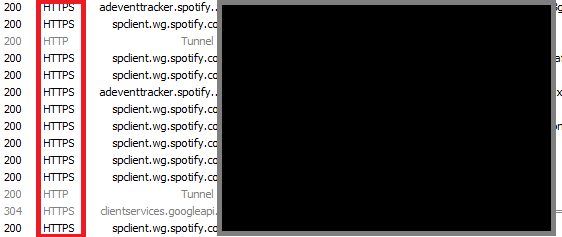
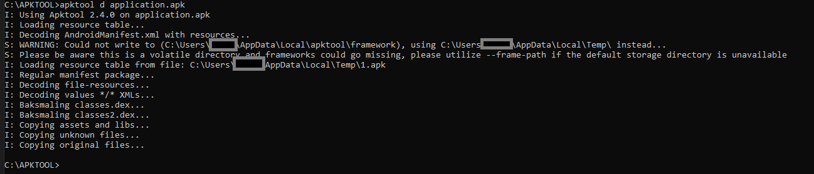
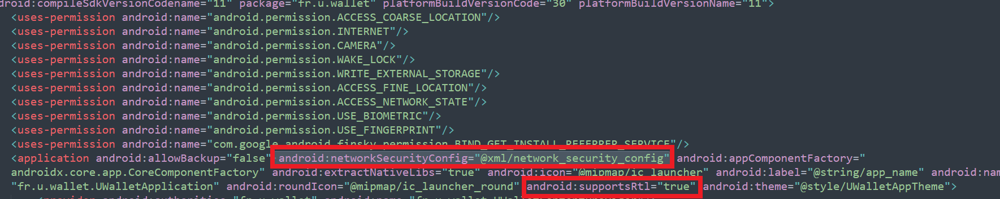
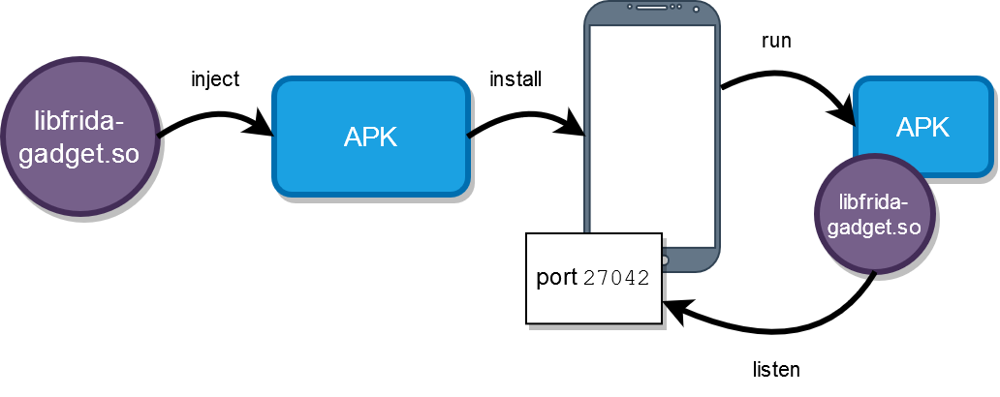
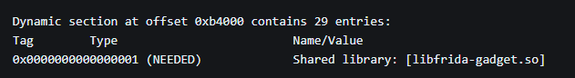
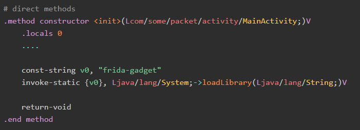
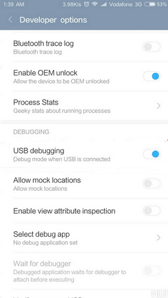
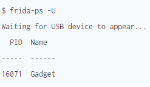

Comment contourner le SSL Pinning sur android
Planted November 4, 2021
Introduction
Pour un projet personnel, j’ai dû récupérer une requête provenant d’une application de mon téléphone. Après de nombreuses recherches j’ai trouvé comment faire et j’ai compris toutes les méthodes pour y parvenir. La principale difficulté pour récupérer le traffic réseau de votre téléphone est de déchiffré les requêtes https.
HttpS , c’est quoi ?
“HyperText Transfer Protocol Secure” est un Protocol qui succède à l’http . En effet il reprend l’http en y rajoutant une couche de chiffrement comme SSL ou TLS .
Un certificat assure l’intégrité de la destination et empêche à un Tier de se plaçant entre votre machine et votre site web pour contrôler votre requête web .
Voici une attaque type de l’homme du milieu ("Man in the middle") :
 Un attaquant détourne vos requêtes vers sa machine et peut ainsi contrôler tous ce que vous faites sur le réseau.
C’est un attaque courant dans les wifi publique (Mcdo , Starbucks)
Un attaquant détourne vos requêtes vers sa machine et peut ainsi contrôler tous ce que vous faites sur le réseau.
C’est un attaque courant dans les wifi publique (Mcdo , Starbucks)
Une fois un certificat SSL initialisé, l’attaquant ne peut plus rien intercepter :

Quel est le lien avec notre application ?
La plupart des applications utilise les certificats pour sécuriser leur connexion et empêche donc la récupération de leur requête.
Comment récupérer le flux wifi d’un smartphone ?
Et oui, avant de vouloir déchiffré HTTPS , il faudrait déjà avoir les HTPP , celles non sécurisées ! On peut utiliser plusieurs logiciels :
Personnellement, je vais utiliser fiddler mais le fonctionnement est identiques pour les autres outils.
On doit se rendre dans les options de connexion est activé la connexion à distance. Tuto pour Fiddler ici
Ajoutons ensuite l’IP de notre pc en tant que proxy sur notre smartphone.
Paramètres > Wifi > Options+ de notre wifi > Proxy :
- Hostname = IP local du pc (192.168.1.X)
- Proxy port = Port utilisé par le logiciel (Fiddler:8888 | Burpsuite:8080)
Il faut ensuite installer le certificat du logiciel sur le smartphone. On peut soit exporter le certificat (fichier .cer ou .crt) et l’installer en cliquant dessus depuis notre gestionnaire de fichier. Soit directement utilisé l’option du sniffer si elle est disponible.
Fiddler : Rendez-vous sur http://ipv4.fiddler:8888/ une fois le proxy configuré et cliquez sur FiddlerRoot Certificate
 Là vous pouvez cliquer dessus une fois télécharger.
Voici un tuto pour fiddler qui résume bien : ici
Là vous pouvez cliquer dessus une fois télécharger.
Voici un tuto pour fiddler qui résume bien : ici
Normalement si tous est bon, vous devriez recevoir les requêtes HTTPS du navigateur. 
Comment bypass le ssl-Pining ?
On arrive à la partie délicate ; les requêtes https provenant d’applications. Il existe plusieurs méthodes :
Méthode 1 :
La première est la plus courante. Pour faire simple, les application ne font pas confiance aux certificat installés par l’utilisateur , en d’autre termes le certificat installé précédemment n’est pas considéré comme fiable par les applications . La première technique est donc de passé ce certificat en tant que certificat système et non utilisateur. En effet la plupart des applications se base sur les certificats système, ceux de google par exemple.
Pour passer notre certificat précédent (celui de fiddler) en tant que système, il faut que notre appareil Android soit rooté . On supprime celui installé précédent et on va venir le réinstallé avec cette application : “Root Certificat Manager” Une fois fais , après un redémarrage , on devrait apercevoir les requêtes déchiffrées .
Si vous n’êtes pas équipé d’un téléphone root , peut être avez-vous un vieux téléphone qui ne sert plus . Dans les anciens smartphone (version d’Android < 5) , les applications acceptent les certificat utilisateur . On peut donc se passer de l’étape précédente et directement récupérer le Traffic. Attention il est possible que l’application refuse votre version d’Android trop ancienne. J’explique comment contourner cette vérification dans la suite de l’article.
Méthode 2 :
Si la technique précédent n’a pas marché, on va devoir faire l’inverse. Au lieu de passer notre certificat en tant que certificat système : on va forcer l’application à autoriser les certificats utilisateurs.
La première étape est de récupéré l’apk de notre application ainsi que tu logiciel APKTOOl
On va décompiler notre apk , allez dans votre invite de commande (cmd/powershell) et rendez-vous dans votre dossier apktool , vous y aurez placer votre apk dans ce même dossier au préalable.
On a :
apktool d application.apk

Un dossier au nom de notre application c’est créé .
Nous devons rajoutez ce code dans le fichier AndroidManifest.xml aprés <application:
android:networkSecurityConfig="@xml/network_security_config"
et
android:extractNativeLibs="true"
OU mettre 'true' à la place de 'false' si 'extractNativeLibs' est déja présent
De cette manière : 
Puis on doit créer/modifier un fichier dans le dossier res/xml du nom de network_security_config.xml
Voici son contenu :
<?xml version="1.0" encoding="utf-8"?>
<network-security-config>
<base-config>
<trust-anchors>
<!-- Trust preinstalled CAs -->
<certificates src="system" />
<!-- Additionally trust user added CAs -->
<certificates src="user" />
</trust-anchors>
</base-config>
</network-security-config>
A vous d’adapter si le fichier existe déjà , <certificates src="user" /> est la ligne important dans les balises trust-anchors .
Vous pouvez aussi ajouter cette ligne par exemple :
<certificates src="@raw/fiddler"/>
Et ensuite crée un dossier res/raw et ajouter le certificat fiddler.cer

Comment changer la version minimale de l’application
Il est possible que votre application refuse de s’exécuter sur votre téléphone s’il est trop vieux.
Pour changer la version minimale, modifiez la valeur de minSdkVersion dans le fichier apktool.yml
23 correspond à Android 6.0
Tous est résumé ici
Maintenant que nous avons modifié notre APK , il faut le recompiler :
apktool b nomdudossier -o fichierdesortie.apk
Vous devriez avoir un fichier apk qui vient de se créer :

Enfin pour installer notre nouvelle apk , nous devons le signer . Pour installer une application, Android doit vérifier la provenance et c’est pour cela que nous devons appliqué une signature à notre nouvelle application patchée .
On peut utiliser jarsigner ou apksigner Je préfère utiliser apksigner car il est plus récent et supporte les dernières version et algorithmes de signatures.
On génère d’abord un keystore
keytool -genkey -v -keystore key.keystore -alias app -keyalg RSA -keysize 2048 -validity 10000
On doit ensuite aligner notre .apk
zipalign -c 4 application.modifie.apk
Enfin, on signe l’apk avec notre keystore :
apksigner sign sign -v --out final.apk --ks key.keystore --ks-key-alias app application.modifie.apk
apksigner verify final.apk
Et voilà ! Vous pouvez installer final.apk sans soucis.
Méthode 3 :
On va ici s’intéresse au Hooking *(Root non requis) *. On va à nouveau modifier l’application mais cette fois avec le Framework Frida . Frida va injecter du code dans notre apk et une fois installé, quand celle-ci sera lancé, elle se connectera à un serveur sur notre pc et nous pourrons désactiver le sslpining de l’application souhaitée
La première étape est de décompiler l’apk comme dans la méthode 2 : On a :
apktool d application.apk
Il faut télécharger la bonne version de frida-gadget
Renommer la librairie en : libfrida-gadget.so
Et placer la dans le dossier lib/architecture:
exemple : /lib/arm64-v8a/libfrida-gadget.so
Maintenant, on doit modifier l’application pour qu’elle lance Frida au démarrage. Nous l’avons ajouter dans l’app , maintenant nous devons l’activer .
Voici un schéma du fonctionnement de Frida : 
On doit installer Frida :
python -m pip install Frida
python -m pip install objection
python -m pip install frida-tools
ou
pip install Frida
pip install objection
pip install frida-tools
Méthode 1 : Modifier la librairie de base et y ajouter celles ce frida
On peut injecter avec ce script notre librairie Frida dans celle qui existe déjà :
(lief doit être installé : python3 -m pip install lief )
#!/usr/bin/env python3
import lief
libnative = lief.parse("target/lib/arm64-v8a/libconscrypt_jni.so")
libnative.add_library("libfrida-gadget.so") # Injection!
libnative.write("target/lib/arm64-v8a/libconscrypt_jni.so")
(Vous devez remplacer libconscrypt_jni.so par le nom de la Lib d’origine ; Pour moi : libconscrypt_jni.so)
On execute:
python3 inject-gadget.py
Sur linux on peut vérifier que ça a marché :
readelf -d target/lib/arm64-v8a/libfromapk.so

Méthode 2 : Modifier le code Smali pour charger notre librairie.
Cette fois, on cherche à injecter du code SMALI dans notre app. Voici le code a injecter ; il permet de charger notre librairie :
const-string v0, "frida-gadget"
invoke-static {v0}, Ljava/lang/System;->loadLibrary(Ljava/lang/String;)V
Pour trouver ou le mettre, on cherche un fichier smali avec : MainActivity
On peut chercher dans AndroidManifest.xml dans les tags <application et <activity
Finalement : 
Important
Il ne faut pas oublier de mettre android:extractNativeLibs sur true si elle est sur false sinon il faut rajouter android:extractNativeLibs="true" après <application
*(Comme dans la méthode 2) *
Il faut aussi ajouter dans le même fichier : <uses-permission android:name="android.permission.INTERNET"/> dans les premières lignes du fichier
Cette étape de patch peut être automatisée avec ce tool
apkpatcher -a application.apk
On peut aussi utiliser Objection pour patcher l’apk : Voici une très bonne vidéo : ici
(Je préfère le faire à la main car je sais ce que je fais et je suis sûr de ne pas avoir d’erreur bêtes)
Quel que soit la méthode , il faut recompiler et re signer notre apk . On suivra les mêmes étapes que dans la méthode 2
Dernière étape !
Il faut maintenant installer l’apk et activer Frida, injecté dans l’application.
Pour ce faire on va utiliser ADB. Il faut activer dans les options développer le débogage et l’installation d’application via USB : 
On doit brancher son téléphone au pc et télécharger le pack de développement ADB (autre lien) et ses drivers
Une fois le téléphone branché et ADB téléchargé, on se rend dans le dossier de adb.exe avec cmd et on vérifie qu’on est connecté à notre appareil :
adb devices
Normalement, on devrait voir notre téléphone.
Là, on peut installer l’apk (Il doit être dans le dossier de adb.exe)
adb install -r application.modifie.apk
Une fois installé, vous pouvez naviguer dans l’application quelques secondes et explorer le maximum d’options, Le but est que la fonction que nous avons modifiée plus haut soit activé et que donc frida-gadget soit lancé. Normalement dès qu’il se lance, l’application se bloque.
A ce moment on peut faire :
frida-ps -U
On devrait avoir ca :  Finalement pour se connecter au serveur :
frida-trace -U Gadget
On peut télécharger ce script : fridascript.js
Et enfin on désactive le ssl pinning avec cette commande :
frida -f fridascript.js -U Gadget
Patch
Dans certain cas rare, l’application vérifie le hash du certificat. Il faut donc supprimer cette vérification pour que notre certificat soit accepté. Voici un exemple de code qui empêche la bonne exécution de notre code :
private boolean k(X509TrustManagerExtensions x509TrustManagerExtensions, HttpsURLConnection httpsURLConnection) {
HashSet hashSet = new HashSet(NetworkConstants.d);
HashSet hashSet2 = new HashSet(NetworkConstants.e);
HashSet hashSet3 = new HashSet(NetworkConstants.f);
try {
MessageDigest instance = MessageDigest.getInstance(MessageDigestAlgorithms.SHA_256);
String str = "";
boolean z = false;
boolean z2 = false;
boolean z3 = false;
for (X509Certificate next : h(x509TrustManagerExtensions, httpsURLConnection)) {
byte[] encoded = next.getPublicKey().getEncoded();
instance.update(encoded, 0, encoded.length);
String encodeToString = Base64.encodeToString(instance.digest(), 2);
str = str + " sha256/" + encodeToString + " : " + next.getSubjectDN().toString() + StringUtils.LF;
if (hashSet2.contains(encodeToString)) {
z = true;
}
if (hashSet.contains(encodeToString)) {
z2 = true;
}
if (hashSet3.contains(encodeToString)) {
z3 = true;
}
}
return z && z2 && z3;
} catch (NoSuchAlgorithmException e2) {
throw new SSLException(e2);
}
}
On va donc modifier le code smali pour avoir une fonction qui renvoie True à chaque appel .
Comme ceci :
const/4 v9, 0x1
move p2, v9
return p2
(code : return true;) pour avoir ce code java :
private boolean k(X509TrustManagerExtensions x509TrustManagerExtensions, HttpsURLConnection httpsURLConnection) {
return true;
}